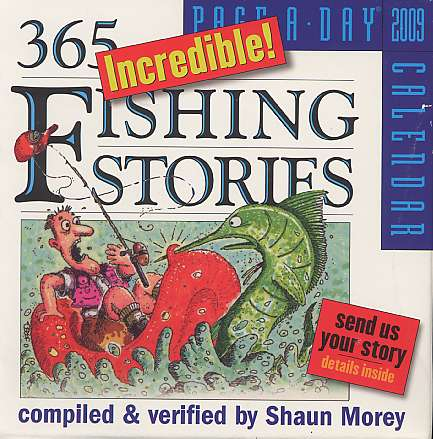
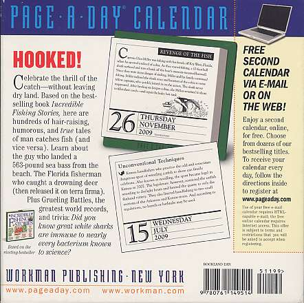

本棚から
大雨の日の読み物に 365 Incredible Fishing Stories 2009 Calendar
Shaun Morey 編著
ISBN 13:978-0-7611-4951-4


インターネット書店の最大手、アマゾンで、カレンダーを探そうと思って洋書のページへ行き、fishing という単語で検索した時にヒットした日めくり形式のカレンダーがこちら。
忙しくてとても毎日は読んでいられないが、暇な時にまとめて読んでいます。このカレンダー（日めくり？）には、天声人語ではないけれども一日一話、魚釣りに関するびっくり仰天話がちりばめられており、読みやすい平易な英文、大きな活字、手頃なサイズと価格で、ぜひ皆様にお勧めしたい一冊です。2008年から毎年出ているようで、2010年版はこちらになります。古本になるとなぜか価格が上昇するようなので、早めにお買い求め下さい。
奇想天外な話の例を二、三挙げますと、夫婦二人の釣り人が同時に１尾の大物オヒョウを釣り上げた話とか、たまたま乗った釣り船の船長さんに勧められてその年の釣り大会にエントリーし、偶然釣り上げた獲物でなんと15,000ドルの賞金を射止めたご婦人の話、メイン州に住むシャッド（ニシンの仲間）のフライフィッシングの名人は、釣っている場所のすぐそばに仕掛けられたフィッシュ・トラップに１尾も掛かっていないにもかかわらず、これまで数百尾のシャッドを釣り上げている話、などがあります。
また、このカレンダーには、
・珍しい獲物、特大の獲物
・各州を公式に代表する魚（海水魚、淡水魚）、例えば....
－アラバマ州ではターポン（海水魚）
－コロラド州ではグリーンバックカットスロートトラウト（淡水魚）
－カリフォルニア州ではゴールデントラウト（淡水魚）
－アリゾナ州ではアパッチトラウト
（淡水魚：アリゾナトラウトとも呼ばれる）
－アラスカ州ではチヌーク（キング）サーモン
・魚に関する面白い事実
・とっておきの釣法
・魚の逆襲
などのテーマにそって数々のエピソードが収集されています。ちなみにアラスカ州のキングサーモンの記録は、1985年に有名なキーナイ川で釣り上げられた、97ポンド4オンス（約44kg）だそうです。
余談ですが、、インターネットの wikipedia には、アメリカ各州の魚の英文一覧表が載っています。このページは写真やイラストもあり、見ていてとても楽しいです。
著者の Shaun Morey 氏には、Incredible Fishing Stories という本もあり、こちらがこのテーマとしては本家の一冊となっています。一年を通じてめいっぱい楽しめるこのカレンダーをあなたもぜひどうぞ！
本棚から 目次へ
サイトマップ
ホームへ
お問い合わせ